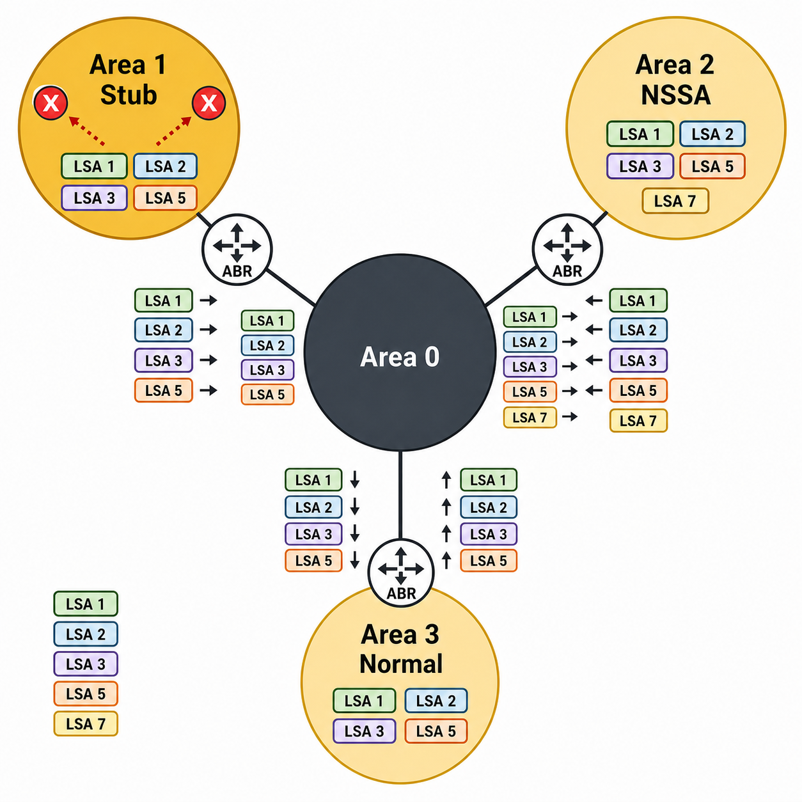

Overview
OSPF (Open Shortest Path First) is a link-state interior gateway protocol — every router in an OSPF domain builds a complete map of the network topology by flooding Link-State Advertisements (LSAs), then independently runs Dijkstra's shortest-path-first algorithm on that map to compute optimal routes. Unlike distance-vector protocols that share routing tables with neighbors, OSPF shares raw topology data. This makes OSPF fast to converge and loop-free by design, but it demands that every router in the domain maintain a synchronized copy of the Link-State Database (LSDB).
OSPF scales through the concept of areas. Area 0 — the backbone — is mandatory and must exist in every OSPF domain. All other areas connect to Area 0 via Area Border Routers (ABRs). Within an area, routers flood type-1 (Router LSA) and type-2 (Network LSA) entries describing their direct links and neighbors. ABRs summarize inter-area topology into type-3 LSAs. External routes injected from other routing protocols arrive as type-5 LSAs and flood throughout the entire domain — unless area types are configured to block them. Stub areas block type-5 LSAs and replace external routing with a default route. Totally stubby areas also block type-3 inter-area LSAs. NSSAs allow a local external source (such as a branch redistributing static routes) while still blocking external type-5 LSAs from the backbone — the branch generates type-7 LSAs that the ABR translates to type-5 for propagation elsewhere.
On multi-access networks like Ethernet, OSPF elects a Designated Router (DR) and Backup Designated Router (BDR) to reduce the number of adjacencies and the volume of LSA flooding. The DR and BDR are elected based on router priority (highest wins) with router ID as a tiebreaker. All other routers (DROthers) form adjacencies only with the DR and BDR, not with each other. On point-to-point links, DR/BDR election does not occur and two routers form a direct full adjacency. FortiGate supports all standard OSPF network types and allows per-interface configuration of cost, priority, hello/dead timers, and authentication.

OSPF area diagram with LSA type flow
Target Questions
These are the questions your Socratic session will explore. Read them before you start — they tell you what understanding to look for while reviewing the study guide.
- 1What is an OSPF area and what is the required role of Area 0 (the backbone)?
- 2What is the difference between a stub area, a totally stubby area, and an NSSA — what LSA types does each block?
- 3What are the 5 OSPF LSA types — what does each one describe?
- 4What is the DR/BDR election process — what determines who wins, and on which network types does it occur?
- 5What are the four OSPF interface network types (broadcast, point-to-point, NBMA, point-to-multipoint) and when does DR election happen?
- 6What is the OSPF cost metric and how is it calculated from interface bandwidth?
- 7How do you prevent a specific route from being advertised into OSPF on FortiGate — what configuration object is used?